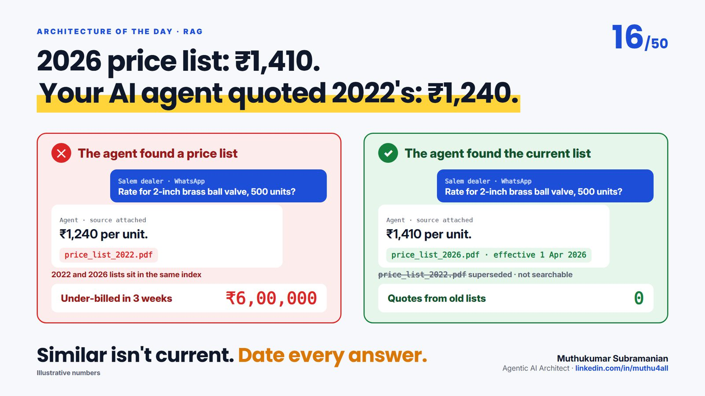

Your AI Agent Read the 2022 Price List. It Cost You ₹6 Lakh.
By Muthukumar Subramanian · Agentic AI Architect

A dealer in Salem sends a WhatsApp message to a valve manufacturer in Chennai: "Rate for 2-inch brass ball valves, 500 units?"
The company's new sales agent replies in six seconds. ₹1,240 per unit. It even attaches the source: price_list_2022.pdf.
The current list says ₹1,410. It has since 1 April. Both files sit in the same folder, and the agent's search found both. The 2022 one just looked a little more similar to the question.
Over three weeks, 19 dealer orders went out at old prices, about 3,500 valves. Roughly ₹6 lakh under-billed before anyone in accounts noticed. (The company and every number here are illustrative. The pattern isn't.)
The agent didn't hallucinate. It retrieved, faithfully, the wrong truth.
The architecture today
RAG, retrieval-augmented generation, is how most companies give an AI agent their own knowledge without retraining a model. It has four simple steps:
→ Chunk. Split every document into small pieces: a page, a paragraph, a table row.
→ Embed. Turn each piece into a vector, a list of numbers that captures its meaning. Yesterday's Day 15 was about where those vectors live.
→ Retrieve. When a question comes in, find the pieces whose meaning is closest to it.
→ Answer with a citation. Hand those pieces to the model and ask it to answer from them, showing the source.
It works remarkably well. That's exactly why it's dangerous. Retrieval ranks by similarity. It has no idea which file is current, which one was withdrawn, or which one was meant only for retail customers. A 2022 price list and a 2026 price list are, to a vector index, almost the same document.
👉 [IMAGE: A-day16-2-in-article-architecture.png]
Caption: Classic RAG plus two new amber parts: a document register that tags every chunk, and a lifecycle filter before the agent answers. Grey is what you already have.
Where AI plugs in now: a register, not a smarter model
The first fix isn't a better model or a bigger index. It's boring, and it's cheap: a document register.
→ Every file that goes into the index gets five tags: owner, effective from, superseded by, audience, and review by.
→ Retrieval filters on those tags before it ranks on similarity. Superseded files don't compete. They simply aren't in the race.
→ Every answer shows its source and its date. "₹1,410 · price_list_2026.pdf · effective 1 Apr 2026." A dealer, or your own sales head, can spot a wrong year in one glance.
→ If no current source exists, the agent says so and pings the owner. "I don't have a current list for this item. I've asked pricing." That's a better answer than a confident old one.
Most vector stores already support this kind of metadata filtering: Amazon Bedrock Knowledge Bases, Azure AI Search and OpenAI's file search all let you filter on attributes before the similarity search. The feature exists. What's missing in most companies is someone who fills in the tags.
👉 [IMAGE: A-day16-3-in-article-five-tags.png]
Caption: Five tags on every file before an agent reads it. Screenshot this for your next RAG review.
I wrote about the business side of this on Day 8 of Track B, when an agent quoted a policy that had expired in 2023. Today's point is architectural: freshness has to be a field in your index, not a hope in your prompt.
Where it's heading with agents
Today RAG mostly answers questions. In two or three years, it'll feed agents that act: quote, order, approve a claim, reply to a regulator. Retrieval stops being a search feature and becomes a control point, with the same seriousness as a payment limit.
I expect three things to become normal:
→ Knowledge owners sign effective dates, the way a pricing circular is signed today.
→ Nightly evaluation sets. Fifty real customer questions, run every night against the index and checked against the owner's answers. If the score drops, someone gets a message before a customer does.
→ Agents that notice conflicts. Two current files that disagree should go to a human, not to the higher similarity score.
Tomorrow, Day 17, goes further into the advanced parts: reranking, hybrid search and checking that every citation actually exists.
Watch it work
Same question, same index. First without the register, then with it.
👉 [GIF: A-day16-4-in-article-stale-chunk.gif]
Caption: The 2022 chunk wins on similarity. The lifecycle filter takes it out of the race, and the answer changes, with its date. All figures illustrative.
Pros
→ Your existing RAG stack stays. You add metadata and a filter, not a new platform
→ Every answer carries a source and a date, so people can check it in seconds
→ "I don't have a current source" turns silent errors into visible ones
Cons
→ Someone has to tag thousands of old files. That's real effort, and nobody's job yet
→ Filters can hide the truth too. Tag a file wrong and the right answer disappears
→ Evaluation sets need maintaining. Prices change, and yesterday's right answer becomes today's test failure
The hard part
It's ownership, again. IT owns the index. Sales owns the price list. Nobody owns the gap between them, which is exactly where the 2022 file sat for six months.
That gap is a role now. Some call it a Context Engineer: the person who decides what an agent may read, how it's split, and when it expires. In smaller firms it's simply the knowledge owner, the pricing manager who also signs off what goes into the index. On the delivery side, a forward deployed engineer (FDE), an engineer who sits with the customer's team and ships on their real systems, is usually the one who finds the 2022 file in the first week. These titles are still settling. The work isn't.
The opportunity
Every department wants its own knowledge assistant: sales, HR, legal, the service desk, the dealer helpline. Most will be built on RAG in a weekend. Most will drift within a quarter.
That's two markets. First, enterprise knowledge assistants built properly, with a register from day one. Second, knowledge freshness as a service: audit the index, tag what's current, retire what isn't, run the nightly evals, and send the owner one report a week with which answers came from which dates. For Indian manufacturers and distributors, where price lists change with every budget, GST revision and metal price swing, that report is worth real money.
Tools to try
LlamaIndex or LangChain to build the pipeline · Azure AI Search, Amazon Bedrock Knowledge Bases or Google's Vertex AI Search with metadata filters · OpenAI file search with attribute filtering · Claude with search-result citations · pgvector if you'd rather keep it in Postgres.
Your turn 👇
When your agent can't find a current source, should it answer from the old one with a warning, or refuse? One word.
Tag the person in your company who'd know, today, which price list is the current one.
Day 16 of 50 · follow along. Tomorrow: Day 17 · Your AI Agent Cited Clause 14. Clause 14 Doesn't Exist. Who Signed Off?